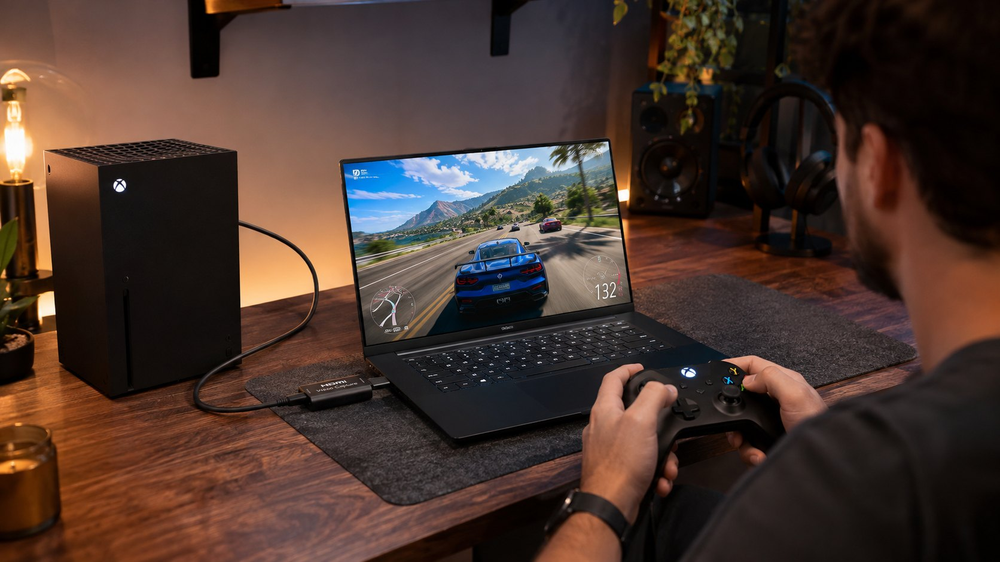
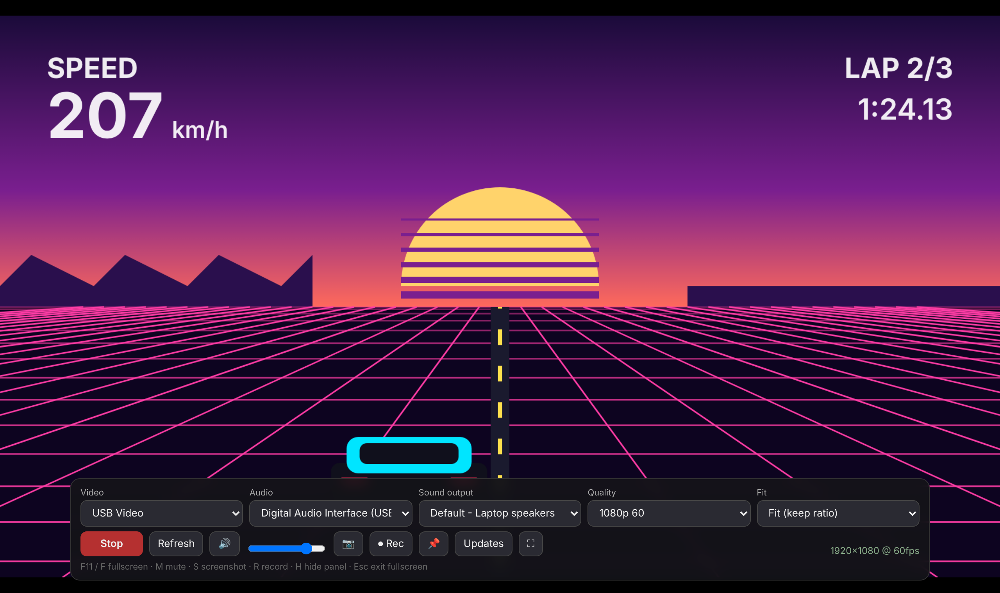
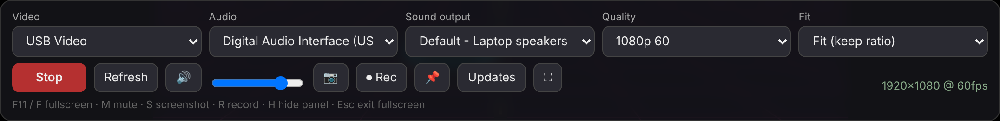
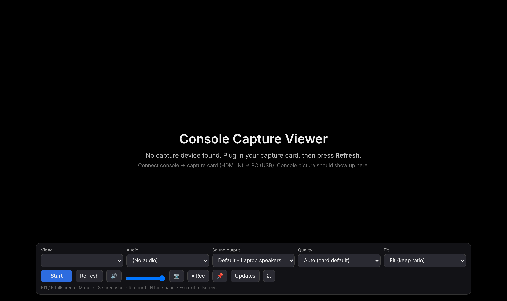

No TV? No problem. Plug a USB capture card into your Windows PC, open Console Capture Viewer, and play your Xbox, PlayStation, or Switch right on your laptop screen, with sound.
Download for Windows How it worksFree · Windows 10 and 11 · Open source · Portable version and all downloads

All you need is a USB capture card (the small HDMI to USB dongles work great), an HDMI cable, and your laptop.
Console HDMI out to the capture card's HDMI IN. Card into a USB port on your laptop.
It finds your capture card on its own. Pick it from the Video menu if you have more than one.
Your game appears, and the sound plays through your laptop speakers or headphones.
Simple and out of the way: your game, with one control bar that hides while you play.
App screenshots use original demo footage.
Press F11 or double-click the picture. The controls and the mouse cursor fade out after a few seconds so it's just you and the game. Move the mouse and they come right back.

Choose your card, pick where the sound plays, set the quality, and go. The app tests your card and shows only the resolutions and frame rates it really supports, up to 1080p60 or 4K on cards that can do it.

Simple on purpose: no accounts, no stream setup, no scenes.
Plays the console's audio through your speakers or headset. Pick any output you like.
Press S to save a PNG of the moment.
Press R to start and stop recording, saved as a video file.
Pin a small window next to your browser or chat while you play.
Opens straight to your card with your last settings.
The installed version checks for new releases and offers a one-click restart.
Shortcuts: F fullscreen · M mute · S screenshot · R record · T on top · H hide controls
If it can't find a card, the app tells you what to do. Plug one in and it picks it up automatically, even while the app is open.

Any card that shows up in Windows as a USB camera (UVC). That includes most low-cost HDMI to USB and USB-C capture dongles, plus many Elgato, AVerMedia and similar cards. They need no driver.
Consoles like PS5, Xbox and Switch can turn on HDMI copy protection (HDCP), which blocks capture cards. Turn HDCP off in the console's settings. Also make sure the console's HDMI cable goes into the card's input, and try a 1080p console output.
A small one. USB capture always adds a little. It's great for casual play, story games and party games; fast competitive shooters will feel it more.
The app isn't code-signed yet, so Windows and your browser may warn about it, like they do for any new unsigned program. The full source is public so you can see exactly what it does. Choose More info then Run anyway, or in your browser's downloads choose Keep.
If it says it couldn't open the card, close OBS, Elgato software or any camera app and press Start again.
Download the installer, plug in your card, press Start.
Download for Windows View on GitHub